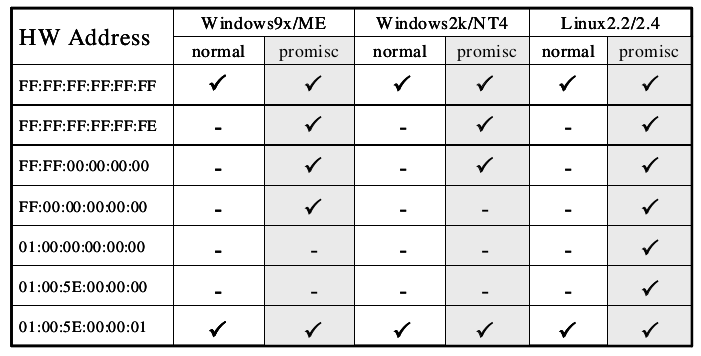

Promiscuous node detection
You have an attacker sitting in your internal network, listening to all the traffic, you are running against time to find him/shut him down! What do you do?
Promiscuous mode
- Promiscuous mode allows a network device to intercept and read each network packet that arrives in its entirety.
-
Unlike Monitor mode, in promisc mode the listener has to be connected to the network.
-
Some tools that use promiscuous mode - Wireshark, Tcpdump, Aircrack-ng, cain and abel, Snort, VirtualBox…
- Extremely effective because of it’s passive nature.
Enable promiscuous mode:
$ sudo ifconfig <iface> promisc
Disable promiscuous mode:
$ sudo ifconfig <iface> -promisc
Detecting promisc node - The idea:
-
All the packets recieved by promisc NIC are passed on to the kernel, so the basic idea of detection is to send specially crafted packets that may trick the system kernel to respond to packets that it is not supposed to respond to in normal mode.
-
Fake ARP request packets, ICMP Ping(echo request) with wrong MAC but right IP address could do the job.
Hardware filter
Normally, NIC of a machine filters and accepts only packets that have destination address set to the NIC’s own hardware address, broadcast address (FF FF FF FF FF FF), and multicast address 1(01 00 5E 00 00 01). Let’s call this a hardware filter, where packets are filtered by NIC based of destination address.
In promiscuous mode, NIC is set to accept every packet that it recieves, like it has no hardware filtering.
- Using the above information it should be easy to find promisc nodes, right?
Just send packet using a destination address that is supposed to be filtered by hardware filter when in normal mode, only if a machine is in promisc mode, it would pass the packet to kernel without hardware filtering and would respond to that packet. - Let’s send an ARP packet to destination 00:00:00:00:00:01. What happens??
Software Filter
- Operating system kernels implement a filter, let’s call it software filter.
- Even though a packet passes through hardware filter, kernel is implementing another filter and this mechanism is filtering out some other addresses so we are not getting a response.
Breaking Hardware filter & Software filter
- The hardware filter usually blocks packets that are not supposed to arrive to the system kernel.
We need to craft a packet that is:
a. Blocked by the hardware filter in normal mode, only passed to kernel in promisc mode.
b. Should be able to pass the software filter.
